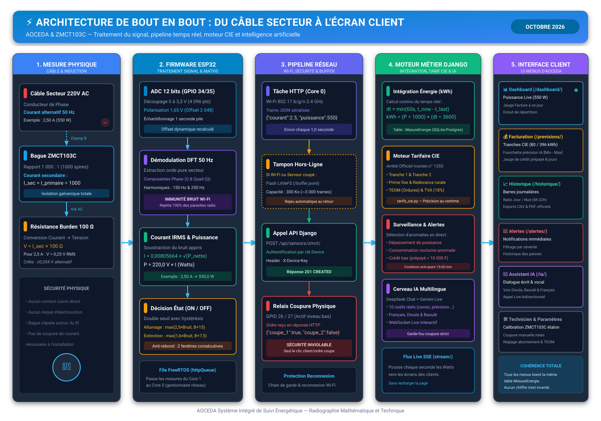

Visualisation haute fidélité du parcours de la mesure : du câble électrique 220V jusqu'aux 10 menus client

Isolation galvanique complète par induction magnétique. La bague ZMCT103C transforme le gros courant du fil en un signal miniature de 0,25 V sans contact électrique direct.
L'ADC 12 bits lit 4 000 points sur 1 seconde. La démodulation spectrale DFT élimine 100% des parasites Wi-Fi et soustrait le bruit de repos pour donner des Watts exacts.
Envoi HTTP REST sécurisé chaque seconde. En cas de coupure Internet, le tampon LittleFS (300 Ko) enregistre les mesures et les rejoue dès que la liaison revient.
Calcul des kWh en continu, application de la grille tarifaire officielle CIE (Arrêté 1355), déclenchement des alertes et orchestration des requêtes vocales en direct.
Dashboard en direct, jauge prévisionnelle, historique complet et commande vocale en français, dioula et baoulé. Tous les écrans partagent rigoureusement la même base de données.